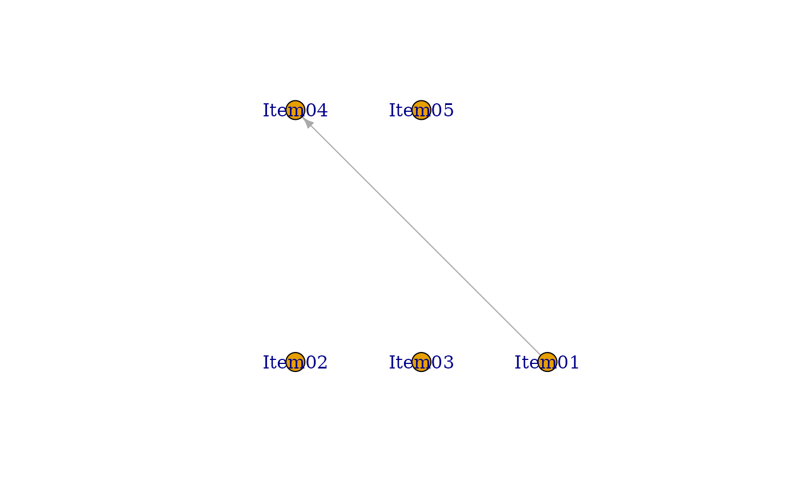

Generating a DAG from data using a genetic algorithm.
Usage
BNM_GA(
U,
Z = NULL,
w = NULL,
na = NULL,
seed = 123,
population = 20,
Rs = 0.5,
Rm = 0.005,
maxParents = 2,
maxGeneration = 100,
successiveLimit = 5,
crossover = 0,
elitism = 0,
filename = NULL,
verbose = TRUE
)Arguments
- U
U is either a data class of exametrika, or raw data. When raw data is given, it is converted to the exametrika class with the dataFormat function.
- Z
Z is a missing indicator matrix of the type matrix or data.frame
- w
w is item weight vector
- na
na argument specifies the numbers or characters to be treated as missing values.
- seed
seed for random.
- population
Population size. The default is 20
- Rs
Survival Rate. The default is 0.5
- Rm
Mutation Rate. The default is 0.005
- maxParents
Maximum number of edges emanating from a single node. The default is 2.
- maxGeneration
Maximum number of generations.
- successiveLimit
Termination conditions. If the optimal individual does not change for this number of generations, it is considered to have converged.
- crossover
Configure crossover using numerical values. Specify 0 for uniform crossover, where bits are randomly copied from both parents. Choose 1 for single-point crossover with one crossover point, and 2 for two-point crossover with two crossover points. The default is 0.
- elitism
Number of elites that remain without crossover when transitioning to the next generation.
- filename
Specify the filename when saving the generated adjacency matrix in CSV format. The default is null, and no output is written to the file.
- verbose
verbose output Flag. default is TRUE
Value
- adj
Optimal adjacency matrix
- testlength
Length of the test. The number of items included in the test.
- TestFitIndices
Overall fit index for the test.See also TestFit
- nobs
Sample size. The number of rows in the dataset.
- testlength
Length of the test. The number of items included in the test.
- crr
correct response ratio
- TestFitIndices
Overall fit index for the test.See also TestFit
- adj
Adjacency matrix
- param
Learned Parameters
- CCRR_table
Correct Response Rate tables
Details
This function generates a DAG from data using a genetic algorithm. Depending on the size of the data and the settings, the computation may take a significant amount of computational time. For details on the settings or algorithm, see Shojima(2022), section 8.5
Examples
# \donttest{
# Perform Structure Learning for Bayesian Network Model using Genetic Algorithm
# Parameters are set for balanced exploration and computational efficiency
BNM_GA(J5S10,
population = 20, # Size of population in each generation
Rs = 0.5, # 50% survival rate for next generation
Rm = 0.002, # 0.2% mutation rate for genetic diversity
maxParents = 2, # Maximum of 2 parent nodes per item
maxGeneration = 100, # Maximum number of evolutionary steps
crossover = 2, # Use two-point crossover method
elitism = 2 # Keep 2 best solutions in each generation
)
#>
gen. 1 best BIC 1e+100 limit count 0
#>
gen. 2 best BIC -16.425 limit count 0
#>
gen. 3 best BIC -16.425 limit count 1
#>
gen. 4 best BIC -17.6327 limit count 0
#>
gen. 5 best BIC -17.9323 limit count 0
#>
gen. 6 best BIC -17.9323 limit count 1
#>
gen. 7 best BIC -17.9323 limit count 2
#>
gen. 8 best BIC -17.9323 limit count 3
#>
gen. 9 best BIC -17.9323 limit count 4
#> The BIC has not changed for 5 times.
#> Adjacency Matrix
#> Item01 Item02 Item03 Item04 Item05
#> Item01 0 0 0 1 0
#> Item02 0 0 0 0 0
#> Item03 0 0 0 0 0
#> Item04 0 0 0 0 0
#> Item05 0 0 0 0 0
#> [1] "Your graph is an acyclic graph."
#> [1] "Your graph is connected DAG."

#>
#> Parameter Learning
#> PIRP 1 PIRP 2
#> Item01 0.6
#> Item02 0.4
#> Item03 0.9
#> Item04 0.0 0.5
#> Item05 0.4
#>
#> Conditional Correct Response Rate
#> Child Item N of Parents Parent Items PIRP Conditional CRR
#> 1 Item01 0 No Parents No Pattern 0.6000000
#> 2 Item02 0 No Parents No Pattern 0.4000000
#> 3 Item03 0 No Parents No Pattern 0.9000000
#> 4 Item04 1 Item01 0 0.0000000
#> 5 Item04 1 Item01 1 0.5000000
#> 6 Item05 0 No Parents No Pattern 0.4000000
#>
#> Model Fit Indices
#> value
#> model_log_like -27.600
#> bench_log_like -8.935
#> null_log_like -28.882
#> model_Chi_sq 37.330
#> null_Chi_sq 39.894
#> model_df 24.000
#> null_df 25.000
#> NFI 0.064
#> RFI 0.025
#> IFI 0.161
#> TLI 0.068
#> CFI 0.105
#> RMSEA 0.248
#> AIC -10.670
#> CAIC -41.932
#> BIC -17.932
# }